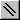

您可以使用各种工具来绘制建筑物的物理特征，例如墙壁和管道。所有绘图都可以使用鼠标或键盘来完成。绘图时，以下鼠标和键盘按键会产生常见行为。鼠标左键（ LMB ）对应于 ¿ , 或 输入 钥匙；鼠标右键（ RMB ）到 Esc 关键。光标的垂直运动对应于 and ¯ 光标键，水平运动对应于 ¬ and → 光标键。
绘制墙壁和管道的基本步骤如下：
1. 激活绘图工具，
2. 设置对象的初始位置，
3. 画出物体，
4. 撤消当前绘图，
5. 完成对象的绘制，然后
6. 停用绘图工具。
激活绘图工具
有四种绘图工具可用，两种用于绘制墙壁，一种用于绘制管道，一种用于绘制控制网络。要激活绘图工具，请从工具栏中选择它，从“工具”菜单中选择它，或使用与菜单项关联的快捷方式。只要该工具处于活动状态，所选绘图工具的工具栏按钮就会保持按下状态。此处显示工具栏按钮和关联的菜单快捷方式。
 矩形（或方框）绘图工具（
Ctrl+B
)
矩形（或方框）绘图工具（
Ctrl+B
)
 自由形式墙壁绘图工具（
Ctrl+W
)
自由形式墙壁绘图工具（
Ctrl+W
)

风管绘图工具（ Ctrl+D )
 控制绘图工具（
Ctrl+L
)
控制绘图工具（
Ctrl+L
)
选择该工具后，将显示绘图光标。绘图光标是一个粉色方块，大小为单个 SketchPad 单元格。最初，光标的中心是透明的。
设置对象的初始位置
要开始绘制对象，首先使用鼠标或键盘箭头键移动绘图光标，然后单击 LMB 或按 ¿ 在键盘上。这会将对象的开头锚定在与您正在绘制的对象类型最近的有效 SketchPad 单元格处。当您选择有效的开始位置时，绘图光标将变为实心，您可以开始绘制对象。
绘制物体
锚定对象的开头后，您只需使用鼠标和/或键盘箭头键即可绘制所需的形状。绘图时，光标将被限制在 SketchPad 房间并限制为特定移动，以便在 SketchPad 的有效单元格内保持绘图。当您移动光标时，SketchPad 上会出现一条黑线，代表您正在绘制的对象的形状。
您还可以使用 Shift + 箭头键 and Ctrl + 箭头键 键盘组合。
Shift + 箭头键 将绘图光标沿箭头方向移动 10 个单元格。可以在 ContamW 配置中修改要移动的单元格数量（请参阅 单元格/图标大小 在 配置 ContamW 部分）。
Ctrl + 箭头键 将绘图光标沿箭头方向移动到下一个图标，该图标可能是墙壁、管道或控件。
撤消当前绘图
在完成对象的绘制之前，您可以撤消绘制。要撤消您绘制的内容，请单击 RMB 或按 Esc 关键。这将擦除粗黑线，但您仍处于绘图模式。要再次开始绘制，请再次设置初始位置并继续绘制另一个对象。
一旦您对绘图感到满意，您可以通过单击 LMB 或按 ¿ 钥匙。这将用适合完成您正在绘制的对象类型的图标替换具有粗黑线的单元格。如果您尝试绘制无效对象，系统将提示您一个对话框，其中包含指示错误类型的消息，然后您将被允许修复绘制的对象。
停用绘图工具
使用完绘图工具后，单击 RMB 或按 Esc 直到系统光标重新出现。此外，如果当前没有锚定对象，选择不同的绘图工具将自动停用当前工具。